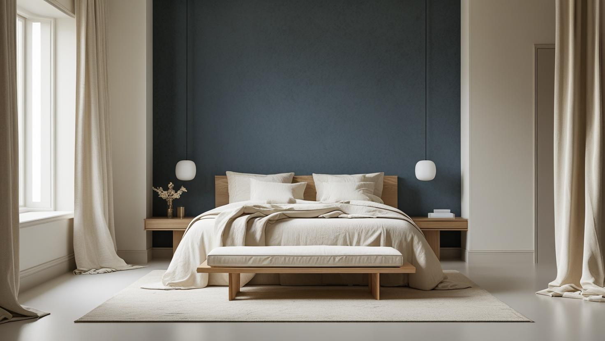
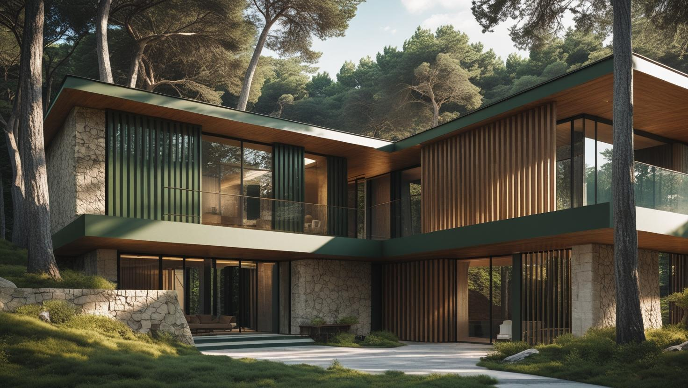
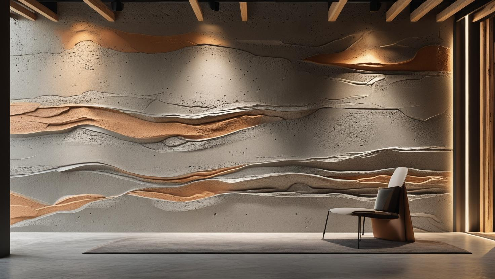

Şişli'nin Profesyonel Boya Ustası
Şişli'de mesai dışında boyanması gereken bir ofis katı ya da raspası gereken eski bir daire mi var? 20 yıllık tecrübemizle iç ve dış cephe boyamayı binanın çalışma saatlerine ve yüzeyin durumuna göre planlıyoruz.
Şişli'de Boya Badana: Ofis, Plaza ve Eski Apartman Dokusu Bir Arada
Şişli boyacı talebi ilçedeki iki farklı dünyadan geliyor. Bir yanda Mecidiyeköy ve Esentepe hattında plaza, ofis ve iş merkezi yoğunluğu; diğer yanda Kurtuluş, Feriköy ve Bomonti çevresinde yüksek tavanlı, kalın sıvalı eski apartman dokusu.
Ofis tarafında belirleyici olan yüzey değil çalışma düzeni: bina yönetimi izni, yük asansörü rezervasyonu, mesai dışı ve hafta sonu çalışma. Bölüm bölüm ilerleyerek ekibin çalışmaya devam etmesini sağlıyoruz.
Eski apartman tarafında ise iş yüzey hazırlığıyla başlıyor. Yüksek tavan, boyanacak yüzey alanını zemin metrekaresinin beklettiğinden fazlaya çıkarıyor; üst üste binmiş eski boya katmanları ise raspa gerektirebiliyor. Şişli boya ustası tekliflerini karşılaştırırken bu kalemin dâhil olup olmadığına bakın.
Şişli Boya Hizmetlerimiz

İç Mekan Boyama
Şişli içinde iç mekan boyama talepleri genellikle ofisler, mağazalar, eski apartmanlar ve hızlı teslim beklenen daireler için gelir. Mecidiyeköy, Bomonti, Osmanbey, Fulya çevresinde boya öncesi macun, astar ve eşya koruma ihtiyacı yerinde kontrol edilir.
- Duvar ve tavan boyama
- Badana işleri
- Renk danışmanlığı
- Kalıcı ve sağlıklı çözümler

Dış Cephe Boyama
Şişli dış cephe işlerinde bina yüksekliği, cephe yıpranması ve çevre koşulları uygulama planını belirler. Mecidiyeköy ve Bomonti hattındaki yapılarda iskele, boya sistemi ve hava durumu birlikte değerlendirilir.
- Isı yalıtımlı boya
- Su geçirmez kaplamalar
- Cadde tarafındaki cephede kir ve is temizliği
- Uzun ömürlü koruma

Dekoratif Boyama
Şişli dekoratif boya uygulamalarında salon, antre veya ofis odak duvarları için renk ve doku seçimi yapılır. Mesai dışı ofis boyama, mağaza yenileme ve eski bina iç cephe tamiri sırasında mevcut ışık ve mobilya rengine göre seçenek sunulur.
- Özel duvar tekstürleri
- Metalik ve mermer efektleri
- Fresko ve trompe l'oeil
- Özel proje tasarımları
Şişli'deki İşlerde Nasıl Çalışıyoruz?
20 Yıllık İstanbul Tecrübesi
İstanbul genelinde edindiğimiz deneyimi Şişli'de ofis katlarının ve eski apartmanların farklı ihtiyaçlarına göre uyguluyoruz
Özenli ve planlı işçilik
Şişli projesinde kullanılan boya, yüzey hazırlığı ve uygulama koşullarına göre uzun ömürlü sonuç hedeflenir
Şeffaf ve Uygun Fiyat
Önceden belirlenmiş, şeffaf fiyat politikasıyla uygun maliyet
Uzman ve Deneyimli Ekip
10+ ustamız arasından işin büyüklüğüne ve çalışma saatlerine uygun ekibi kuruyoruz
7/24 Destek ve İletişim
Telefon veya WhatsApp üzerinden ulaşıp fotoğraf paylaşarak ücretsiz keşif randevusu isteyebilirsiniz
Memnuniyet odaklı çalışma
Keşifte konuşulan kapsam yazılı teklife geçer; eşya ve zemin korunmadan boyaya başlanmaz, iş temiz teslim edilir
Şişli Boyacı Ustası Olarak Plaza, Mağaza ve Eski Apartman İşleri
Şişli, İstanbul'un merkezi iş bölgelerinden birini barındırır. Mecidiyeköy'deki plaza ve ofis binaları, Nişantaşı'nın prestijli konutları, Bomonti'deki dönüşüm projeleri ve Feriköy ile Osmanbey'in karma yapı stoğu; ilçeye özgü ve birbirinden farklı boya badana ihtiyaçları doğuruyor. Şişli boyacı ustası olarak ofis, daire, plaza cepheleri ve dönüşüm projelerinde geniş bir deneyimle hizmet veriyoruz.
Keşif talebinde işin ofis, mağaza ya da daire olduğunu, binanın hangi saatlerde çalışmaya izin verdiğini ve tavanların da boyanıp boyanmayacağını belirtmeniz, ekibin ve takvimin ilk görüşmede doğru kurulmasını sağlar.
Şişli ev boyama taleplerinde Bomonti ve Feriköy'deki dairelerin taşınma veya kiracı değişimi takvimine uygun hızlı teslim planlarız; Mecidiyeköy plazalarındaki ofis boyama işlerini ise akşam ve hafta sonu vardiyalarıyla mesai kaybı yaşatmadan tamamlıyoruz. Hizmet kapsamımızın tamamını İstanbul Boyacılık ana hizmet sayfası üzerinden inceleyebilirsiniz.
Garantili İşçilik
Şişli projesinde kullanılan boya, yüzey hazırlığı ve uygulama koşullarına göre uzun ömürlü sonuç hedeflenir
Ücretsiz Keşif
Keşif ücretsizdir; ölçü, yüzey durumu ve bina yönetiminin çalışma saatleri yerinde not edilir
Zamanında Teslimat
Başlangıç günü ve tahmini süre, mesai dışı çalışma gerekip gerekmediği bilinerek teklifle birlikte konuşulur
Kurtuluş, Feriköy ve Pangaltı'daki Eski Apartmanlarda Üst Üste Binmiş Boya Katmanları
Eski apartman dairesinde yeni boyanın ömrünü, alttaki katmanların duvara ne kadar sağlam tutunduğu belirler. Alttaki katman zayıfsa üstüne sürülen boya da onunla birlikte kalkar.
Yıllar içinde üst üste sürülen boyalar özellikle tavan köşelerinde, pencere altlarında ve kalorifer peteklerinin arkasında pul pul ayrılmaya başlayabilir. Keşifte bu bölgeleri kontrol ediyor, tutunmayan katmanları kazıyıp sıvayı düzelttikten sonra yüzeyi astarla yeni boyaya hazırlıyoruz. Dökülme ve soyulmanın nedenlerini boyanın neden döküldüğünü ve soyulduğunu anlatan rehberimizde ayrıntılı bulabilirsiniz.
- Bant kontrolü: yüzeye yapıştırılıp çekilen bantla boya kalkıyorsa o bölge kazınmadan boyanmaz.
- Tebeşirlenme: ele toz bırakan eski boya, astarla sabitlenmeden yeni katı tutmaz.
- Tavan köşesi ve kılcal çatlaklar: yüksek tavanlı odalarda platformla çalışılarak dolgu ve zımpara yapılır.
Osmanbey ve Halaskargazi Caddesi Hattında Mağaza ve Showroom Boyaması
Cadde üzerindeki mağaza ve showroom'larda boya planı satış saatlerine ve ürünlerin korunmasına göre kurulur. Binanın üst katlarında konut ya da ofis varsa ortak girişin kullanımı da plana girer.
- Çalışma zamanı: uygulama mağazanın kapalı olduğu saatlere alınır, yeniden açılıştan önce kokunun dağılması için havalandırma süresi bırakılır.
- Ürün ve raf koruması: askılı ve katlanmış ürünler kapalı bir alanda toplanır, raf sistemleri örtülür.
- Işık ve renk: showroom'da duvar rengi, ürün aydınlatmasının renk sıcaklığına göre deneme boyasıyla seçilir.
- Ortak giriş: üst kat kullanıcılarının geçişi için merdiven ve kapı önü korunur, malzeme binaya yoğun saatler dışında taşınır.
Vitrin ve cephe tarafındaki uygulamalar için mağaza ve AVM cephe boyamasını anlatan rehberimize göz atabilirsiniz.
Şişli'de Boya Badana Teklifini Belirleyen Kalemler
Şişli'de teklif, metrekarenin yanında binanın nasıl kullanıldığına göre de şekillenir; aynı apartmanda ofis, muayenehane ve konut bir arada olabilir. Metrekare aralıkları bu sayfadaki fiyat tablosunda yer alıyor, aşağıdaki kalemler ise aralığın neresinde olacağınızı belirliyor.
- Karma kullanımlı binalar: ofis ve konutun bir arada olduğu apartmanlarda gürültülü işler komşu kullanıcıların saatlerine göre sıralanır.
- Boya dayanımı: bekleme salonu, koridor ve mutfak gibi yoğun kullanılan yerlerde silinebilir boya seçilir.
- Renk değişimi: koyu bir renkten açık renge geçerken fazladan kat gerekebilir.
- Erişim: asansörsüz eski binalarda üst kata malzeme taşıma işin gün sayısına eklenir.
Genel maliyet aralıklarını 2026 ev boyama fiyatları sayfamızda karşılaştırabilirsiniz. Şişli boya ustası olarak daireniz ya da iş yeriniz için rakamı ise ölçü ve yüzey kontrolü yapmadan vermiyoruz.
Şişli Boya Fiyatları
| Hizmet Türü | Metrekare Fiyatı | Ortalama Süre (100m²) | Garanti |
|---|---|---|---|
| İç Cephe Boyama | 100-200 TL | 2-3 Gün | Uygulama kapsamına göre |
| Dış Cephe Boyama | 180-280 TL | 3-5 Gün | Uygulama kapsamına göre |
| Dekoratif Boyama | 250-500 TL | 4-7 Gün | Uygulama kapsamına göre |
| Ofis Boyama | 150-250 TL | 2-4 Gün | Uygulama kapsamına göre |
| Badana İşleri | 80-150 TL | 1-2 Gün | Uygulama kapsamına göre |
Metrekare fiyatları yaklaşık ön değerlendirme aralığıdır. Uygulanacak ölçüm yöntemi, boyanacak alanın kapsamı, yüzey durumu, tamirat ihtiyacı, kat sayısı ve malzeme seçimi keşif sırasında netleştirilir.
Dış cephe boya fiyatları uygulama alanı için yaklaşık 180–280 TL/m² aralığındadır. Kesin hesaplama yöntemi ve teklif; yüzey durumu, bina yüksekliği, erişim veya iskele ihtiyacı, tamirat kapsamı, boya sistemi ve uygulanacak kat sayısına göre keşif sırasında netleştirilir.
Uygulama kapsamına göre işçilik garantisi sağlanır. Garanti kapsamı ve istisnaları teklif veya iş sözleşmesinde belirtilir.
Bu rakamlar İstanbul Boyacılık'ın 2026 gösterge fiyat aralığıdır. Bir piyasa ortalaması değildir. Kesin fiyat; yüzey durumu, hazırlık ve tamirat miktarı, uygulanacak kat sayısı, seçilen malzeme sınıfı, ulaşım ve kat koşulları ile evin eşyalı mı boş mu olduğu keşifte görüldükten sonra belirlenir.
Şişli'de aralığı belirleyen iki ayrı mekanizma var: eski apartmanlarda yüksek tavan ve raspa kalemi, ofis tarafında ise mesai dışı çalışma ve bina yönetimi kısıtları. İkisi de aralığı yukarı taşıyabiliyor, ama farklı nedenlerle.
Şişli'de Hizmet Verdiğimiz Mahalleler
Ofis yoğunluğu Mecidiyeköy ve Esentepe'de, eski apartman dokusu Feriköy ve Teşvikiye'de öne çıksa da aşağıdaki mahallelerin hepsinde keşif yapıyoruz:
Şişli Mahalleleri
- Şişli 19 Mayıs Mahallesi
- Şişli Bozkurt Mahallesi
- Şişli Cumhuriyet Mahallesi
- Şişli Duatepe Mahallesi
- Şişli Ergenekon Mahallesi
- Şişli Esentepe Mahallesi
- Şişli Eskişehir Mahallesi
- Şişli Feriköy Mahallesi
- Şişli Fulya Mahallesi
- Şişli Gülbahar Mahallesi
- Şişli Halaskargazi Mahallesi
- Şişli Halide Edib Adıvar Mahallesi
- Şişli Halil Rıfat Paşa Mahallesi
- Şişli Harbiye Mahallesi
- Şişli İnönü Mahallesi
- Şişli İzzet Paşa Mahallesi
- Şişli Kaptanpaşa Mahallesi
- Şişli Kuştepe Mahallesi
- Şişli Mahmut Şevket Paşa Mahallesi
- Şişli Mecidiyeköy Mahallesi
- Şişli Merkez Mahallesi
- Şişli Meşrutiyet Mahallesi
- Şişli Paşa Mahallesi
- Şişli Teşvikiye Mahallesi
- Şişli Yayla Mahallesi
Faydalı Bağlantılar
Şişli boya badana planında fiyat hesabı, boya markası ve yakın ilçe seçeneklerini birlikte değerlendirmek için aşağıdaki rehberler kullanılabilir.
Sıkça Sorulan Sorular
Şişli'de ofis, mağaza ve apartman dairesi boyatırken sorulabilecek konuları aşağıda yanıtladık
Boş dairede iş eşyalı eve göre daha hızlı ilerler; bu yüzden planı yeni kiracının giriş tarihine göre kuruyoruz. Keşifte çivi delikleri, sıva çatlakları, rutubet izi ve kararmış tavanları not ediyor, önce tamiratı yapıp ardından astar ve boyaya geçiyoruz. Eski apartmanlarda tavan yüksekliği ve raspa ihtiyacı teklifte ayrıca belirtiliyor.
Tek bir doğru yok; seçimi odanın kullanımına göre yapıyoruz. Yüksek tavanlı ve ışığı yandan alan salonlarda mat yüzey duvardaki küçük dalgalanmaları daha az gösterir. Koridor, mutfak ve çocuk odası gibi sık temizlenen yerlerde silinebilir yarı mat veya saten yüzey daha kullanışlıdır.
Eşyalarınızı koruma örtüleriyle tamamen kapatıyoruz. Profesyonel ekipmanlarımızla eşyalarınızın zarar görmesini önlüyoruz.
Evet, iş bitiminde tüm alanları temizleyerek teslim ediyoruz. Artık malzeme ve atıklar titizlikle toplanır. Temizlik hizmetimiz standart olarak tüm paketlerimizde mevcuttur.
Talebinizi aldıktan sonra 24 saat içinde ücretsiz keşif ve fiyat teklifinizi tarafınıza iletiyoruz. Acil durumlarda aynı gün içinde dönüş yapabiliyoruz.
Bina yüksekliği, cephe malzemesi ve izolasyon durumuna göre metrekare fiyatımız değişebilir. Keşifte net fiyat veriyoruz.
İş sonrasında ihtiyaç duyulan konularda destek süreci proje kapsamına göre değerlendirilir.
Evet, ek ücret karşılığı 48 saat içinde başlayabileceğimiz express hizmetimiz bulunuyor.
Web sitemizdeki "Yorumlar" bölümüne ek olarak talep halinde önceki projelerimizden fotoğraf ve iletişim referanslarını paylaşabiliriz.
Evet. Nişantaşı, Şişli'nin en yoğun hizmet verdiğimiz semtlerinden biridir. Daire, rezidans ve ofis boyama için işin kapsamına, konuma ve ekip müsaitliğine göre aynı gün keşif sağlanabilir.
Evet. Mecidiyeköy'deki plaza ve ofis katlarında hafta sonu veya mesai saati dışında boyama hizmeti sunuyoruz. İş akışınızı bozmadan çalışabiliriz.
Evet. Bomonti'nin kentsel dönüşüm binaları için hem iç cephe hem de dış cephe boyama hizmeti veriyoruz. Yeni teslim yapılarda boyama öncesi sıva ve alçı hazırlığı da dahil edilebilir.
Ofisimizi çalışırken boyatabilir miyiz?
Evet. Bölüm bölüm ilerliyor, gece ve hafta sonu çalışıyoruz. Boyanan bölümü ayırıyor, elektronik ekipmanı ve zemini örtüyoruz; diğer bölümlerde çalışma devam edebiliyor.
Kurtuluş ve Feriköy'deki yüksek tavanlı dairelerde fiyat neden farklı çıkıyor?
Zemin metrekaresi aynı olsa bile boyanacak duvar yüzeyi tavan yüksekliğiyle artıyor; ayrıca yüksek tavanda çalışmak platform ve ek süre gerektiriyor. Teklifi ölçülen yüzey alanı üzerinden veriyoruz, zemin metrekaresi üzerinden değil.
Plaza ve iş merkezlerinde çalışma saatleri kısıtlı, sorun olur mu?
Olmuyor. Kısıtlı saat aralığı işin gün sayısını uzatabiliyor; bunu keşifte öğrenip teklife baştan yansıtıyoruz. Yük asansörü rezervasyonunu da planın parçası olarak yönetimle konuşuyoruz.
Şişli Boyacılık Müşteri Yorumları
"Şişli’deki evimizi boyattık. İstanbul Boyacılık gerçekten titiz çalışıyor. Özellikle detaylara verdikleri önem çok hoşuma gitti."
Nazan Demir
Şişli / İstanbul
"Ofisimizin boyası için Şişli’deki adresimize geldiler. Zamanında geldiler ve hızlı teslim ettiler. Çok memnun kaldık."
Serdar Akyüz
Şişli / İstanbul
"Şişli çevresinde kaliteli boyacı bulmak zordu. Hem fiyatı uygun hem de işçilik mükemmeldi. Tavsiye ederim."
Melisa Koç
Şişli / İstanbul
İletişim
İşletme merkezi: Orta, Demirkapı Cd. No:1, 34030 Bayrampaşa/İstanbul
İşletme merkezini Google Haritalar’da görüntüleyin
İletişim Bilgileri
Telefon: 0507 832 29 12
E-posta: boyaustamistanbul@gmail.com
10+ Uzman Ustamızla Şişli ve tüm İstanbul'a hizmet veriyoruz
Çalışma Saatleri: 7/24 (Pzt-Paz 00:00-23:59)